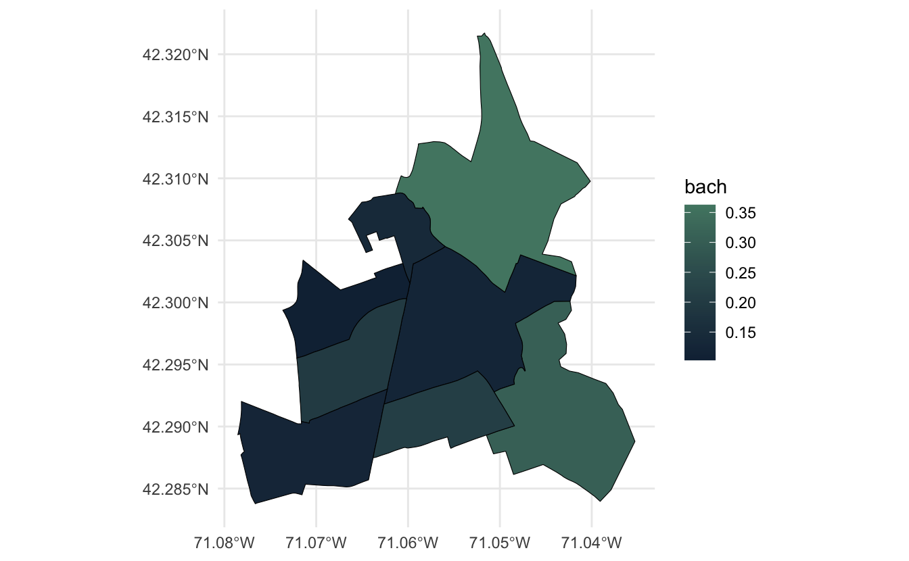
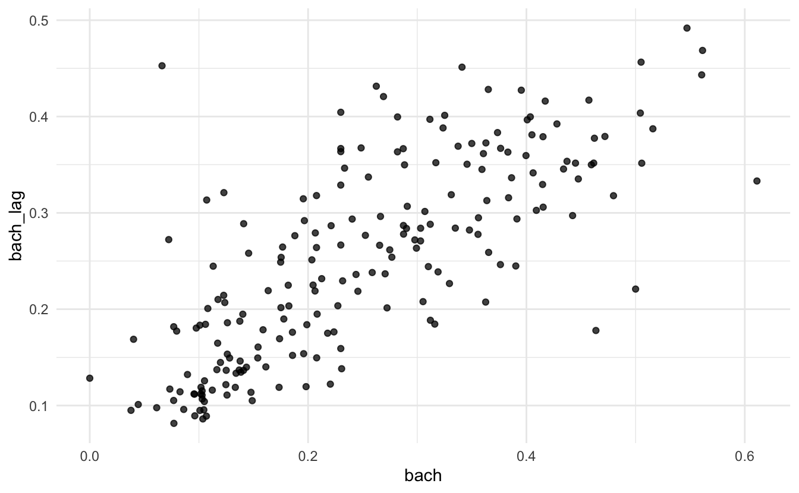
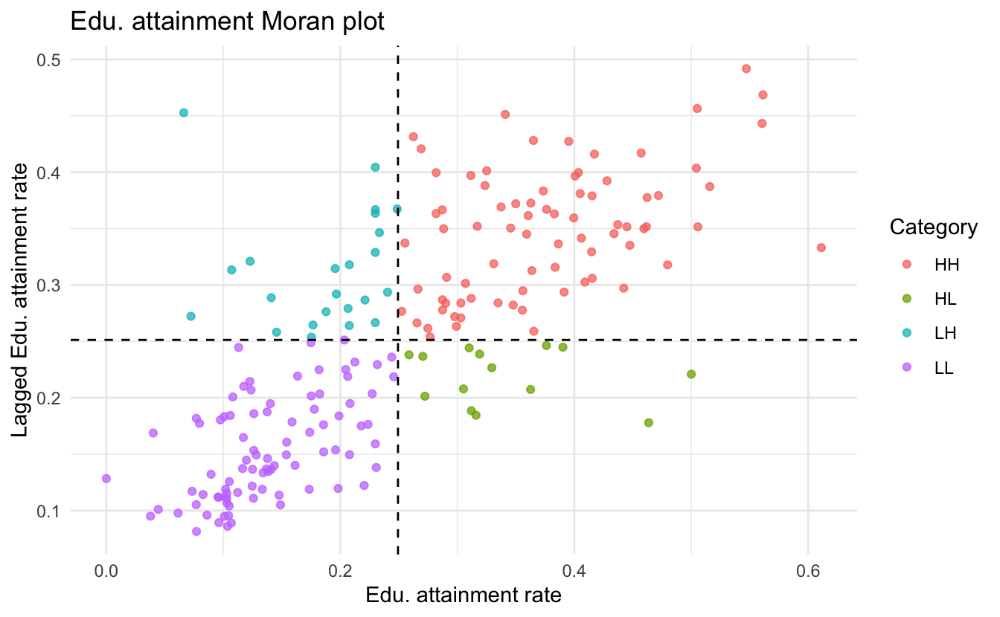
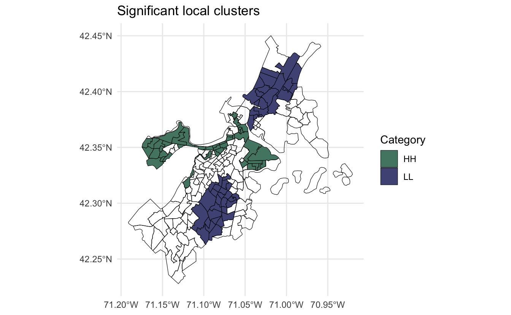

In the last tutorial we went over the concept of spatial autocorrelation and Moran’s I. Moran’s I is a global measure meaning it characterizes the entire dataset. It is helpful in informing us that there is or is not some degree of spatialness to our data. But it doesn’t help us understand where clustering might occur. For that, we need to move our analysis down to a more local level.
Alternative to Moran’s I measure of global autocorrelation, we can use local indicators of spatial association (LISA). Moran’s I looks at all units collectively whereas LISA calculates an I for each group of neighbors. If Moran’s I does not indicate a global autocorrelation, that does not rule out the possibility of any local clustering which can be sussed out with LISA.
For this tutorial we will use the same dataset as previously. Below is the code used to create the sf object. Note that if you haven’t yet installed {sfweight} you will need to do so with remotes::install_github("josiahparry/sfweight").
library(sf)
library(sfweight)
library(tidyverse)
acs <- select(uitk::acs_raw,
fips = ct_id_10, med_house_income,
by_pub_trans, bach) %>%
mutate(fips = as.character(fips),
across(.cols = c(med_house_income, by_pub_trans, bach),
~replace_na(.x, median(.x, na.rm = TRUE))))
acs_sf <- left_join(uitk::suffolk_county, acs, by = "fips")In order to calculate local measures of spatial autocorrelation, we will need three things:
We’ve previously covered the first two items, but not the third. Before we jump into spatially lagged variables, let’s create the neighbors and weights and store them in an object acs_nb.
acs_nb <- acs_sf %>%
mutate(nb = st_neighbors(geometry),
wt = st_weights(nb))With the neighbors and weight matrix calculated, we can begin the process of calculating our LISA. In order to do so we must calculate the spatial lag. The spatial lag takes our variable of interest and averages it for a location’s neighbors. By taking the average we are accounting for neighborhood effects and this local average can then be compared with the locations actual value to see if there is a discrepancy between itself and its neighbors.
Let’s look at the first observation in our acs_nb object to see how this is calculated. First we’ll take the neighbor indexes from the nb list column. Then we’ll use that to grab those rows and the original observation itself using slice().
# grab neighbors
nb_index <- slice(acs_nb, 1) %>%
pull(nb) %>%
pluck(1)
# slice to only neighbor rows and original row
nb_1 <- acs_nb %>%
slice(1, nb_index) %>%
select(bach)
# plot bach
ggplot(nb_1, aes(fill = bach)) +
geom_sf(lwd = 0.2, color = "black") +
scale_fill_gradient(high = "#528672")

We can see that the middle census tract may has quite a low level of educational attainment when compared to the tract above and to it’s lower right. To calculate the spatial lag of this census tract, we need to take the average of all observations. Their values are as follows
nb_1
#> Simple feature collection with 8 features and 1 field
#> Geometry type: MULTIPOLYGON
#> Dimension: XY
#> Bounding box: xmin: -71.07854 ymin: 42.28378 xmax: -71.03529 ymax: 42.32171
#> Geodetic CRS: WGS 84
#> # A tibble: 8 x 2
#> bach geometry
#> <dbl> <MULTIPOLYGON [°]>
#> 1 0.124 (((-71.06249 42.29221, -71.06234 42.29273, -71.06226 42.29301, -71.0621…
#> 2 0.305 (((-71.05147 42.28931, -71.05136 42.28933, -71.05032 42.28961, -71.0484…
#> 3 0.363 (((-71.06127 42.30907, -71.06103 42.30961, -71.061 42.30968, -71.06083 …
#> 4 0.141 (((-71.06649 42.30671, -71.06584 42.30731, -71.06551 42.30762, -71.0650…
#> 5 0.103 (((-71.07364 42.29937, -71.07293 42.29958, -71.07274 42.29966, -71.0726…
#> 6 0.198 (((-71.07212 42.29551, -71.07133 42.29568, -71.07115 42.29573, -71.0702…
#> 7 0.126 (((-71.07851 42.28943, -71.0784 42.28981, -71.07831 42.29017, -71.07826…
#> 8 0.212 (((-71.06373 42.28778, -71.06364 42.28811, -71.06351 42.28855, -71.0634…To calculate the average we can pull out the bach vector, excluding the observation itself, and take the mean.
nb_1 %>%
slice(-1) %>%
pull(bach) %>%
mean()
#> [1] 0.2069233The spatial lag for that observation is 0.206 This makes sense as it’s neighbors had clearly higher values. Rather than do this for each and every observation we can utilize the function st_lag() which takes 3 arguments:
x: the numeric variable of interest,neighbors: the list of neighborsweights: the list of weights to be used.Let’s calculate the lag for bach and store it in variable bach_lag.
acs_lag <- acs_nb %>%
mutate(bach_lag = st_lag(bach, nb, wt))
acs_lag %>%
select(bach, bach_lag)
#> Simple feature collection with 203 features and 2 fields
#> Geometry type: MULTIPOLYGON
#> Dimension: XY
#> Bounding box: xmin: -71.19125 ymin: 42.22793 xmax: -70.9201 ymax: 42.45012
#> Geodetic CRS: WGS 84
#> # A tibble: 203 x 3
#> bach bach_lag geometry
#> <dbl> <dbl> <MULTIPOLYGON [°]>
#> 1 0.124 0.207 (((-71.06249 42.29221, -71.06234 42.29273, -71.06226 42.29301…
#> 2 0.305 0.208 (((-71.05147 42.28931, -71.05136 42.28933, -71.05032 42.28961…
#> 3 0.405 0.381 (((-71.11093 42.35047, -71.11093 42.3505, -71.11092 42.35054,…
#> 4 0.141 0.289 (((-71.06944 42.346, -71.0691 42.34661, -71.06884 42.3471, -7…
#> 5 0.208 0.264 (((-71.13397 42.25431, -71.13353 42.25476, -71.13274 42.25561…
#> 6 0.365 0.428 (((-71.04707 42.3397, -71.04628 42.34037, -71.0449 42.34153, …
#> 7 0.159 0.179 (((-71.01324 42.38301, -71.01231 42.38371, -71.01162 42.3842,…
#> 8 0.230 0.159 (((-71.00113 42.3871, -71.001 42.38722, -71.00074 42.3875, -7…
#> 9 0.266 0.296 (((-71.05079 42.32083, -71.0506 42.32076, -71.05047 42.32079,…
#> 10 0.199 0.184 (((-71.11952 42.28648, -71.11949 42.2878, -71.11949 42.28792,…
#> # … with 193 more rowsWe can see that the lag is the same for the first observation as what we calculated by hand.
With this new lagged variable we can create a scatterplot that compares the original variable to the lagged variable. This is called a Moran plot. It helps us identify observations that are similar or dissimilar from their neighbors.
acs_lag %>%
ggplot(aes(bach, bach_lag)) +
geom_point(alpha = 3/4)

There are typically a number of enhancements to this plot that are made to make it easier to comprehend. The observations are grouped by quadrant where the I is high-high (HH), II is high-low (HL), III is low-low (LL), and IV is low-high (LH). Observations that fall in the category of HH and LL indicate local clusters given that high values are around high values and low by low. The II and IV quadrants are what may be the most interesting, though. These are typically observations that might have a stark difference with their adjacent neighbors.
To improve this chart we can categorize the points and add lines indicating the means of x and y. For categorization we can use the categorize_lisa() function which adds the groups. To add the lines we will use geom_vline() and geom_hline() respectively.
acs_lag %>%
mutate(lisa_cat = categorize_lisa(bach, bach_lag)) %>%
ggplot(aes(bach, bach_lag, color = lisa_cat)) +
geom_point(alpha = 3/4) +
geom_vline(aes(xintercept = mean(bach)), lty = 2) +
geom_hline(aes(yintercept = mean(bach_lag)), lty = 2) +
labs(title = "Edu. attainment Moran plot",
y = "Lagged Edu. attainment rate",
x = "Edu. attainment rate",
color = "Category")

Now that we have the intuition of the spatial lag and its relationship with the local clusters, we can run the LISA.
In sfweight, LISAs are created with local_moran(). local_moran() creates a dataframe column that we can extract with unpack() from the tidyr package. Unfortunately unpack() doesn’t work with sf objects so we’ll need to cast acs_lag to a tibble with as_tibble(), then unpack(), then back to sf with st_as_sf().
acs_lisa <- acs_lag %>%
mutate(lisa = local_moran(bach, nb, wt)) %>%
as_tibble() %>%
unpack(lisa) %>%
st_as_sf()The resulting columns provide the local I, expected I, variance, z-value, and p value of each observation.
acs_lisa %>%
as_tibble() %>%
select(contains("ii"))
#> # A tibble: 203 x 5
#> ii e_ii var_ii z_ii p_ii
#> <dbl> <dbl> <dbl> <dbl> <dbl>
#> 1 0.315 -0.00495 0.138 0.863 0.194
#> 2 -0.137 -0.00495 0.328 -0.231 0.592
#> 3 1.22 -0.00495 0.245 2.47 0.00678
#> 4 -0.253 -0.00495 0.161 -0.618 0.732
#> 5 -0.0363 -0.00495 0.245 -0.0634 0.525
#> 6 1.23 -0.00495 0.245 2.49 0.00637
#> 7 0.379 -0.00495 0.138 1.03 0.150
#> 8 0.103 -0.00495 0.195 0.245 0.403
#> 9 0.0474 -0.00495 0.494 0.0745 0.470
#> 10 0.195 -0.00495 0.245 0.405 0.343
#> # … with 193 more rowsWith this information, we can now identify where any significant clusters may be. We can do this by creating a column that classifies the LISA only if the p value is less than some threshold (alpha = 0.1, in this case). Then we can plot those classifications on our map of Boston.
acs_lisa %>%
mutate(sig_clusters = ifelse(
# conditional statement
p_ii <= 0.1,
# when true
categorize_lisa(bach, bach_lag),
#when false
NA)) %>%
ggplot(aes(fill = sig_clusters)) +
geom_sf(color = "black", lwd = 0.2) +
scale_fill_manual(values = c("#528672", "#525586"),
na.translate = FALSE) +
labs(title = "Significant local clusters",
fill = "Category")

This map shows us that there are three distinct local clusters. The clusters, one near Chelsea and Revere and the other containing (as far as I can guess by the shape!) Roxbury, Dorchester, and Mattapan indicate that these areas have significantly lower educational attainment rates than average. Additionally, the areas of Downtown, South Boston, and Allston all have a higher level of educational attainment.
Sign up for our (infrequent) newsletter to stay up to date.